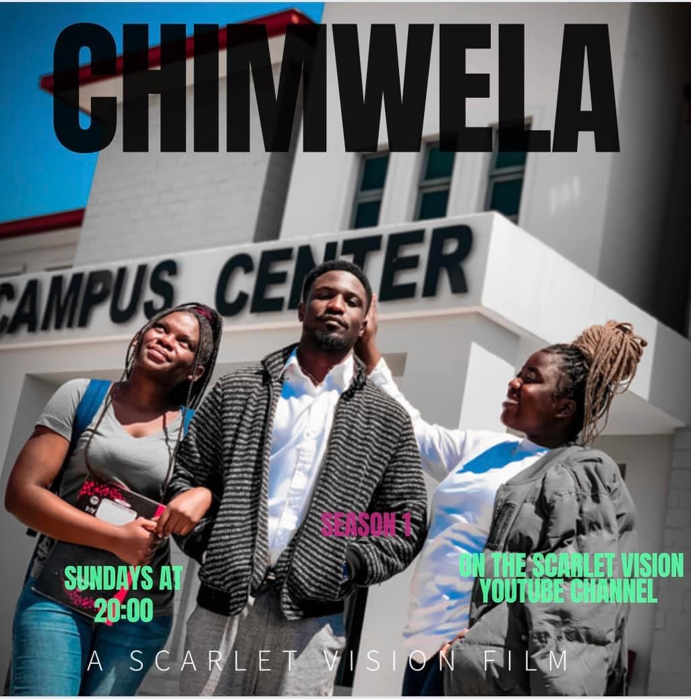
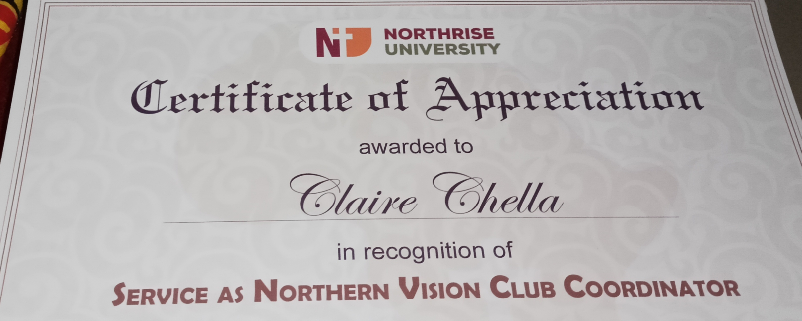

Northrise University
TikTok · Recorded, created, editedI have also made many other reels for the Northrise University Instagram account.

A Scarlet Vision series, 2022 – 2025
A campus series from Scarlet Vision, where I served as Executive Producer and Board Member. I co-created the series and starred in, recorded, edited and directed some of the episodes (full credits are on YouTube).
Watch on YouTubeWant more? View more episodes on the Scarlet Vision YouTube channel

I'm a creative, results-driven content creator with experience in social media content, video editing, digital marketing and brand storytelling. I produce content for TikTok, Instagram, YouTube and Facebook, manage online communities and support marketing campaigns. My goal is high-quality content that drives engagement, grows brand awareness and connects with audiences.
I have also made many other reels for the Northrise University Instagram account.
Currently running the WornWith social media account.
Scarlet Vision is a startup media company for creative storytelling and digital entertainment. I served as Executive Producer and Board Member and helped build it. I co-created Chimwela, recorded, edited and produced video, ran promo campaigns, and helped plan and host public events.
Worked with writers, actors, editors and production teams from concept to final production.
Media Team: promo content for university events, videos for social media, photography and videography coverage, and content that increased engagement across campus platforms. I also appeared on camera for the chapel live streams and the last three graduation live streams.
Media Council: planning media strategies, campaigns, branding initiatives and digital communications with the marketing and communications teams.
Video and static posts, branding and campaign rollouts for Stacey Servana and other freelance clients, plus my own content: scripts, trend research, brand collaborations and short-form editing.
Photography, videography and live streaming at church events, and digital media content that promoted events and community engagement.
A Northrise University club that I co-founded, later renamed Northern Arts. I served as Vice President and was later elected President. I led meetings, coordinated events, produced short films and event visuals, and designed promotional assets.
